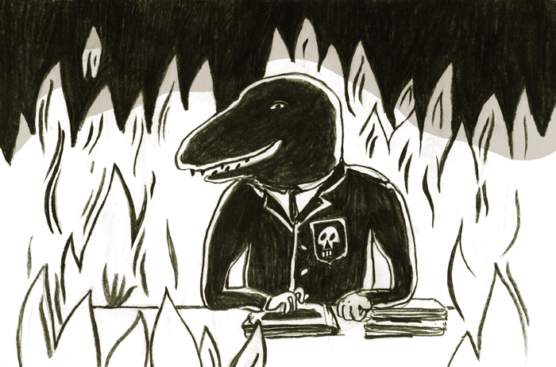
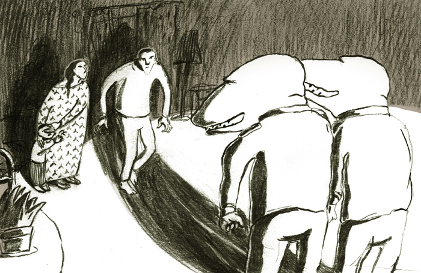

Через двадцать лет после падения железного занавеса историческое сообщество в Западной Европе медленно начинает рассуждать про отношения между внутренним диссидентством и органами безопасности. Оказывается, и на Западе власть не гнушалась использовать против своих диссидентов радикальные репрессии и практики контроля.
Норберту Гильмезу сегодня (9 ноября 2014 года, в день падения Берлинской стены — Прим. ред.) девяноста два года. Он — один из тридцати до сих пор живущих шахтёров, которые в 1948 году участвовали в массовой забастовке французской угольной промышленности. Их судьба недавно была освещена французским историком Домиником Симмонотом в книге «Самое тёмное место в ночи. Великая забастовка шахтёров 1948 года» (Plus noir dans la nuit. La grande grève des mineurs de 1948, 2014). Из более чем трёхсот тысяч участников забастовочного движения, организованного прокоммунистическими профсоюзами ВКTПрофсоюзный центр Франции, включает 2.4 млн. человек. Выступает за единство рабочего класса, улучшение его положения, за демократические свободы и мир. в рамках процесса, который против «коммунистической пятой колонны» вёл министр внутренних дел Жюль Мок, были необоснованно осуждены около тысячи рабочих. Подавление забастовки в 1948 году является одним из забытых эпизодов холодной войны, которых даже во Франции немало. Можно также вспомнить репрессии против активистов движения за независимость Алжира в Париже 17 октября 1961 года, которые десятки лет были вытеснены из коллективной памяти.
Открытые раны и закрытые архивы
История отношений между государством и диссидентами в Западной Европе заключается не только в перечислении различных несправедливостей, допущенных с 1948 по 1989 год. Более систематичный обзор действий полиции пытается предоставить, например, итальянский историк и архивист Андрео Маори. Главным источником, с которым он работает, являются архивы итальянской службы госбезопасности, доступ к которым был открыт в 2000 году. В своих исследованиях Маори показывает, что полиция путём инфильтрации и работы с доносчиками проводила мониторинг не только течений, подозреваемых в шпионаже в пользу Восточного блока, но также и социалистических и либеральных партий, студенческих и феминистических движений, и даже зарождавшихся тогда содружеств на католической основе по инициативе Второго Ватиканского собора. Под бдительным надзором итальянских органов госбезопасности в 70-х годах оказались и молодой лидер марксистского движения «Рабочая власть» (Potere Operaio) Антонио Негри, одна из ведущих деятелей итальянского нудистского движения Лена Соларо и главы нового церковного движения Comunione e Liberazione.
Публикация Маори (Dossier libertà controllata, 2013), где прослеживается деятельность полиции с 1948 до начала 90-х годов, является в некотором роде уникальной, поскольку на примере Италии, которая в ходе холодной войны играла значительную и весьма специфичную роль, показывает размах и функционирование полицейского надзора и репрессий. Удивительно, насколько мало подобных исследований вышло в странах Западной Европы за последние 25 лет.

После падения железного занавеса историки в этих странах столкнулись с худшими условиями для исследований, чем их коллеги из Восточной Европы, где доступ к архивам начал открываться в начале 90-х годов. Люстрация в посткоммунистических странах разорвала преемственность между главами органов госбезопасности, так что у новых начальников не было повода из сословной солидарности защищать своих предшественников. В Западной Европе открытие доступа к архивам происходит гораздо осторожнее.
Несомненно, что многие события, произошедшие с 1948 по 1989 год, для Западной Европы всё ещё являются открытыми ранами. Достаточно упомянуть недавний арест североирландского политика Джерри Адамса, подозреваемого на основании данных, полученных в ходе устно-историческогоУстная история — научная дисциплина, в рамках которой с помощью интервью производится фиксация субъективного знания отдельной личности о прошлом. проекта Belfast Project, в убийстве бывшей члена ИРА в 1972 году. Испанское государство, к примеру, отказывается в процессе переговоров по урегулированию исторического спора с баскскими автономистами предоставить данные архивов госбезопасности касательно полувоенных группировок, на совести которых в постфранкистской Испании были десятки жертв и которые полиция не только терпела, но и поддерживала.
Разрушить железный занавес
В последние годы всё чаще слышны призывы к созданию общей истории Первой и Второй мировых войн, способной перешагнуть партикулярность национальных видений. Выполнение данного требования вполне возможно, ибо эти конфликты политически «остыли»: борьба против фашизма детерриторизировалась, и Великую войну уже никто не понимает как столкновение демократических держав-союзников и авторитаристских Центральных держав. Холодная война, напротив, всё ещё остаётся политически горячей темой, потому что властвующие в Европе неолиберальные режимы по-прежнему черпают символическую легитимацию из победы над Восточным блоком и из погребения советского «коммунизма».

Совместные исследования исторических сообществ на Западе и Востоке осложняются и гегемонным характером парадигмы тоталитаризма, из которого следует, что функционирование тоталитарной полиции и демократических служб общественной безопасности являются фактически несопоставимыми в связи с характером политического режима, в котором развивались механизмы контроля и репрессий. Отличия отдельных политических режимов, разумеется, необходимо принимать во внимание, однако в этом аспекте не представляют собой гомогенной группы и государства Западной Европы. Вместе с тем нельзя игнорировать и ряд сходств. Очевидно, что и на Западе полиция стремилась держать под контролем диссидентов и культурно либо социально отличные группы и индивидуумов. Причём это происходило несмотря на отсутствие уголовно-правовых оснований. Вся история холодной войны в Европе пронизана моментами, которые лучше всего описываются шмиттовской дефиницией чрезвычайного положения, когда легальность данного режима отходит на задний план из соображений власти, чтобы та могла эффективно развернуть репрессивные меры. Самостоятельного исследования заслуживало бы и проникновение органов госбезопасности через железный занавес и их конструкция образа внутреннего врага.
Четверть века после падения Берлинской стены в европейской историографии зияет пустота, проистекающая из соответствия идеологическим настройкам, сложившимся после 1989 года. Заполнение этой пустоты определённо помогло бы лучше понять способы функционирования полицейских органов в прошлом и, вероятно, в настоящем.
Автор является сотрудником итальянского журнала Il Manifesto.